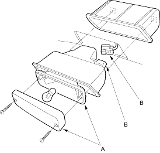
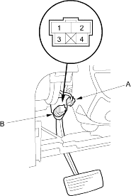

- Remove the two screws from the rear fog light (A).
Rear Fog Light: 21 W

- Disconnect the 2P connector (B) from the light.
- Disconnect the 4P connector (A) from the brake pedal position switch (B).

- Check for continuity between the No. 1 and No. 2 terminals.
- There should be continuity when the brake pedal is pressed.
- There should be no continuity when the brake pedal is released.
- Check for continuity between the No. 3 and No. 4 terminals (with cruise control).
- There should be no continuity when the brake pedal is pressed.
- There should be continuity when the brake pedal is released.
- If necessary, adjust or replace the switch, or adjust the pedal height (see page 19-5).